Contents
clear all; close all; %parameters syms R0; syms r theta phi x y z; assumeAlso(0<=phi<=2*pi); assumeAlso(0<=theta<=2*pi); assumeAlso(r>0); assumeAlso(R0>r); assumeAlso(R0-r>0); assumeAlso(R0>0);
Coordinate transformation
The coordinate transformation for a torus T=[(R0+ r.*cos(theta)).*cos(phi) ; ... (R0+ r.*cos(theta)).*sin(phi);... r.*sin(theta)]; The coordinate transformation for a cylinder
T=[r.*cos(theta); ... phi;... r.*sin(theta)]; % Cartesian coordinates as function Handles X=matlabFunction( T(1,:),'Vars',[r,theta,phi,R0]); Y=matlabFunction( T(2,:),'Vars',[r,theta,phi,R0]); Z=matlabFunction( T(3,:),'Vars',[r,theta,phi,R0]);
Jacobi matrix of the transformation
J_T= simplify(jacobian(T', [r theta phi])); % Inverse of Jacobi matrix J_T_inv=simplify(inv(J_T),'Steps', 10);
L=-simplify(J_T_inv*J_T_inv'*det(J_T)); % Tnteger modes syms n m integer; % Basis function constant in r psi=symfun(exp(1j*(n*phi+m*theta)),[m,n]); % Gradient of basis function psi_grad=gradient(psi,[r theta phi]); syms m1 n1 m2 n2; % % K=symfun(simplify(psi_grad(m1,n1)'*L*psi_grad(m2,n2)),... % [m1,n1,m2,n2]); M=simplify(psi(m1,n1)'*psi(m2,n2)*-det(J_T)); % M=simplify(subs(subs(M,'r',1),'R0',5)); M=symfun(M,[m1,m2,n1,n2]); num_theta=3; num_phi=2; [m,n]=ndgrid( -num_theta:1:num_theta, -num_phi:1:num_phi); m=reshape(m,numel(m),1); n=reshape(n,numel(n),1); nm=[n,m]; MM=sym(zeros((num_theta*2+1)*(num_phi*2+1))); for idx=1:length(nm) for jdx=idx:length(nm) MM(idx,jdx)=int(int(... M(nm(idx,2),nm(jdx,2),nm(idx,1),nm(jdx,1)),... phi,0,2*sym('pi')),theta,0,2*sym('pi')); end end MM=MM+MM'-diag(diag(MM)); % Plot sparsity pattern spy(MM); title('sparsity pattern for L^2 projection');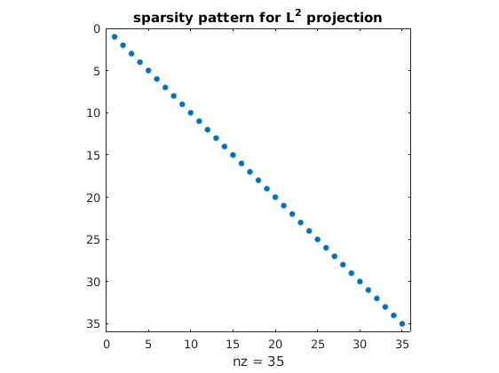
Visualization
Set up grid in theta-phi plane for visulization
[THETA,PHI]=ndgrid(linspace(0,2*pi,200),...
linspace(0,2*pi*2/3,200));
ASDEX Upgrade geometry
minorR=0.8; %minor radius majorR=1.65; %major radius % Get cartesian coordinates XX=X(minorR, THETA,PHI,majorR); YY=Y(minorR, THETA,PHI,majorR); ZZ=Z(minorR, THETA,PHI,majorR); figure; surf(XX,YY, ZZ); axis equal; grid on; colormap jet; shading interp; title('domain');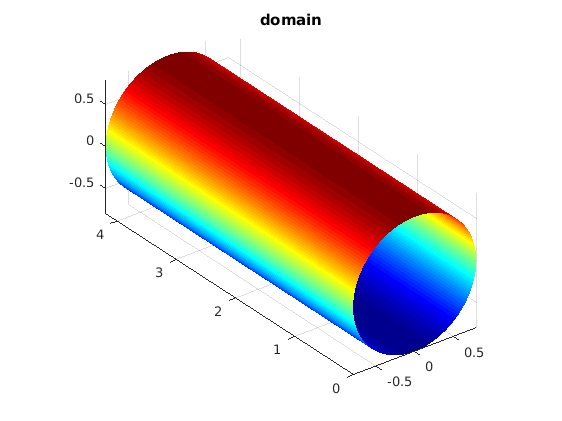
Spectrum of the projection
%Get symbolic eigenvectors and eigenvalues [MM_V,MM_D]=eig(MM); % Sort eigenvalues, eigenvectors for the given parameters [D,idx]=sort(double(subs(subs(diag(MM_D),r,minorR),R0,majorR))); V=MM_V(:,idx); V=double(subs(subs(V,r,minorR),R0,majorR)); figure; plot(D,'*-'); xlabel('harmonic No.'); ylabel('eigenvalue'); %axis([1,length(D),-inf,inf]); title('eigenvalues of L^2 projection'); grid on;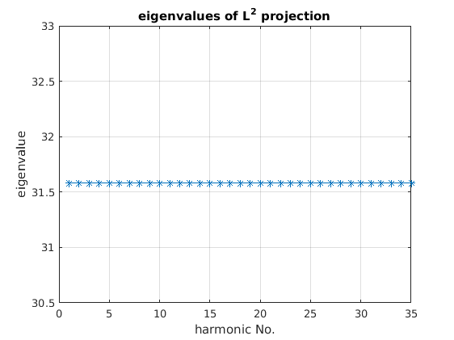
Harmonics of L^2 projection
figure; for idx=1:size(V,2) figure; coeffs=V(:,idx); modes=nm(coeffs~=0,:); coeffs=coeffs(coeffs~=0); fun=0; for jdx=1:size(modes,1) fun=fun+coeffs(jdx)*exp(1j*... (modes(jdx,1)*PHI+(modes(jdx,2)*THETA))); end surf(XX,YY, ZZ,real(fun)*D(idx)); axis equal; grid on; colormap jet; shading interp; colorbar; title(sprintf('harmonic No. %d (real part)', idx)); str=cell(size(modes,1)+1,1); str{1}=' n m'; for kdx=1:size(modes,1) str{kdx+1}=sprintf('%3d %3d', modes(kdx,1),modes(kdx,2)); end dim = [0 0 0.3 0.3]; annotation('textbox',dim,'String',str,'FitBoxToText','on'); end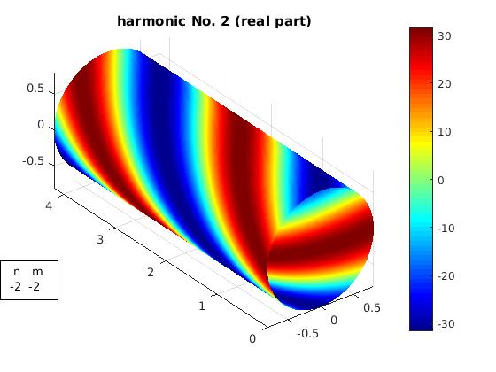
 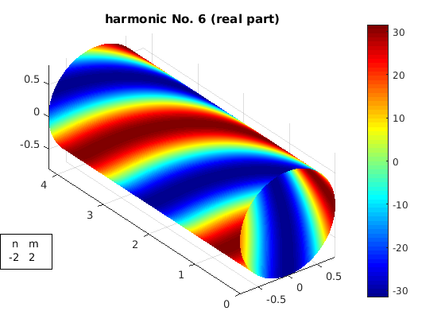 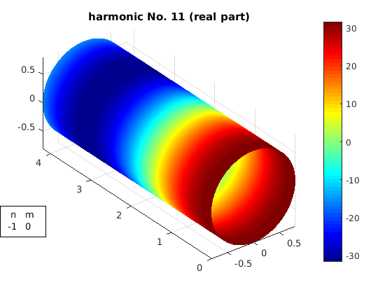 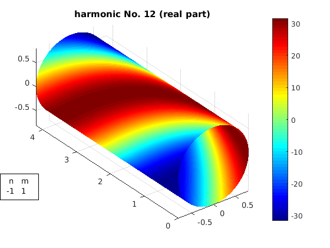 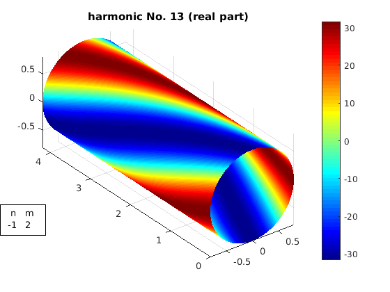 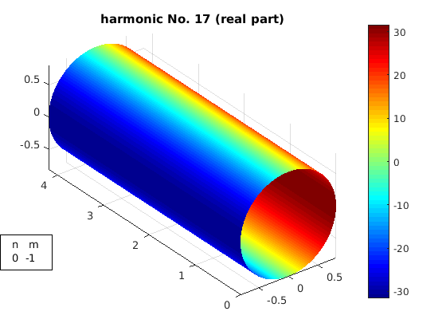 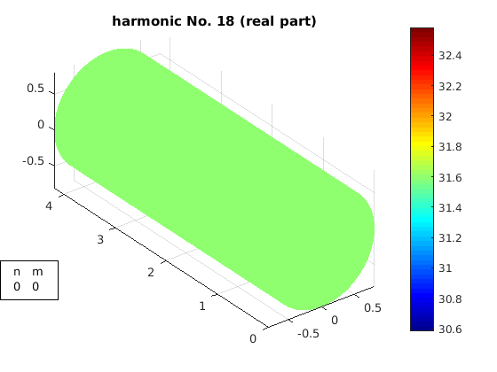 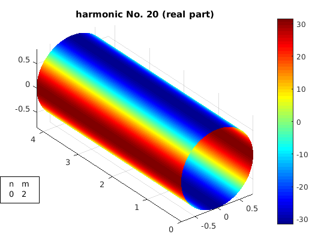 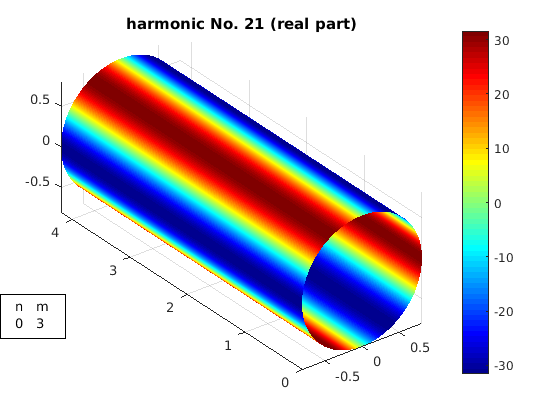 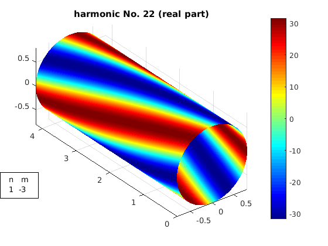 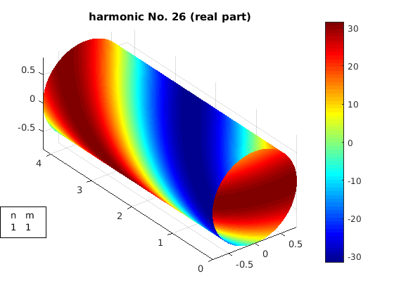 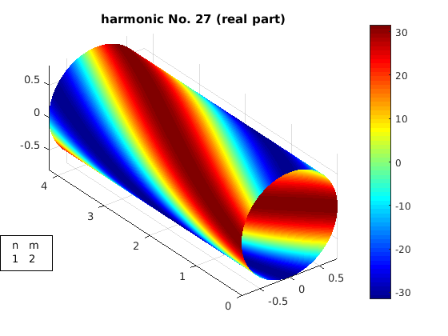 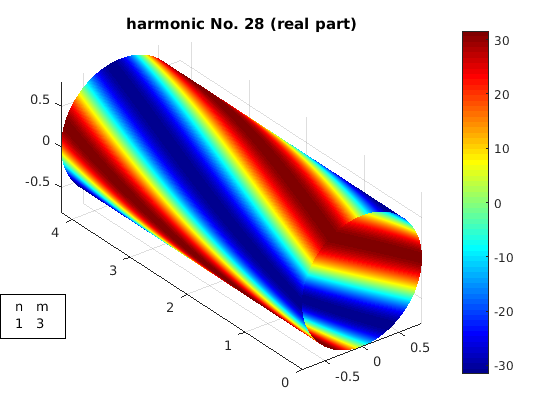 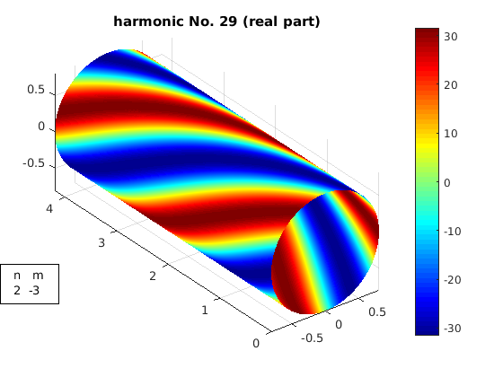 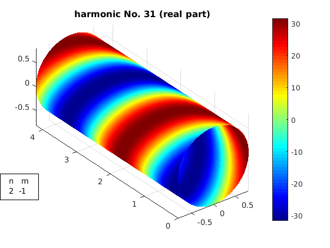 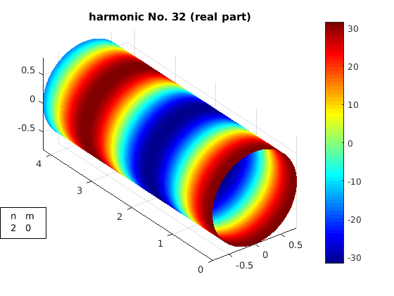 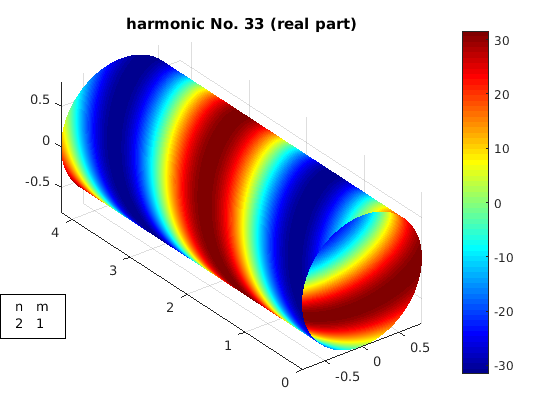 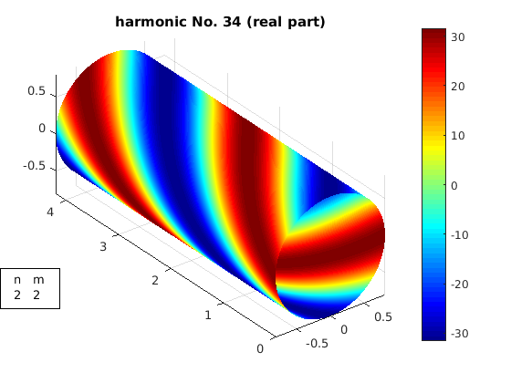 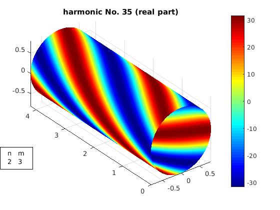
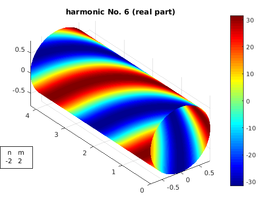 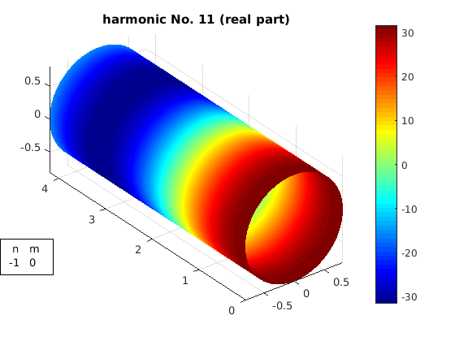 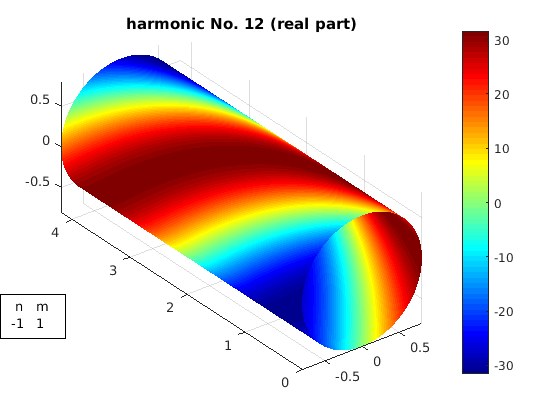 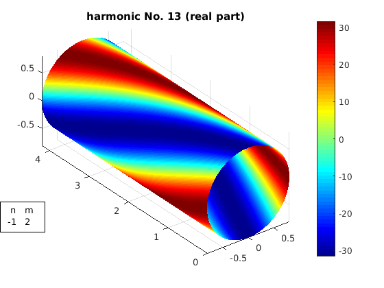 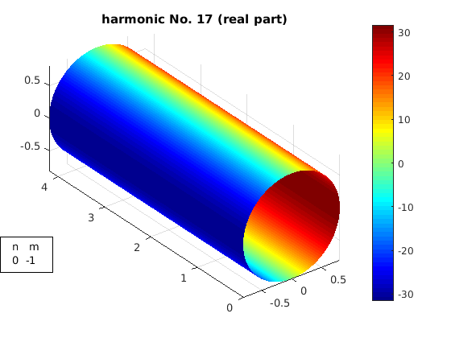 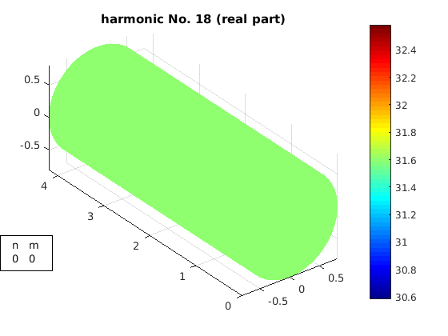 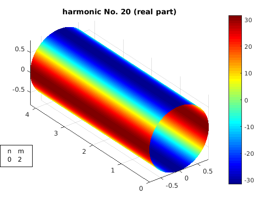 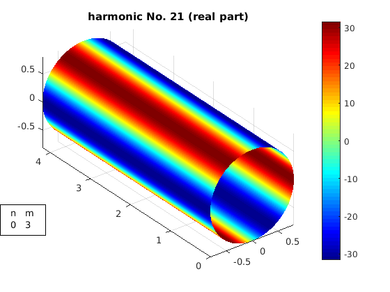 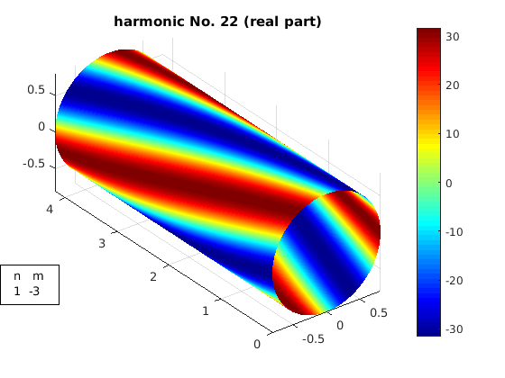 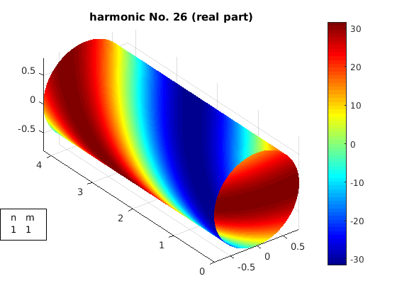 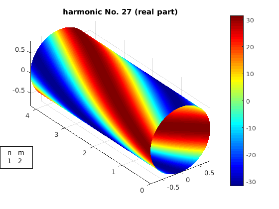 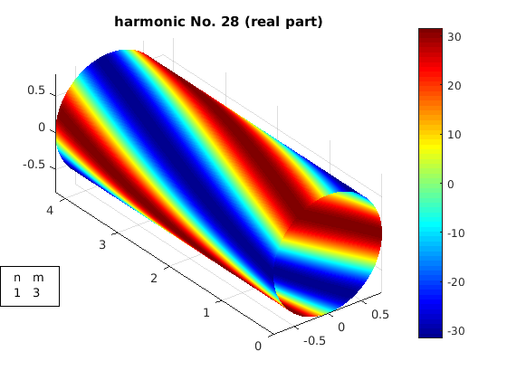 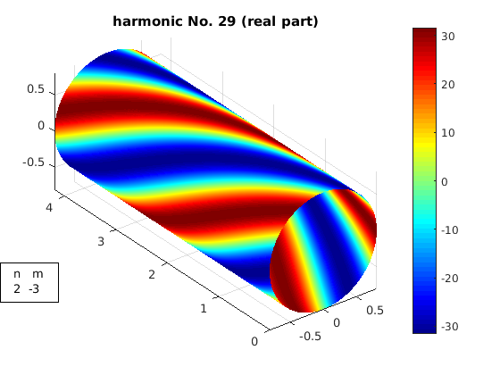 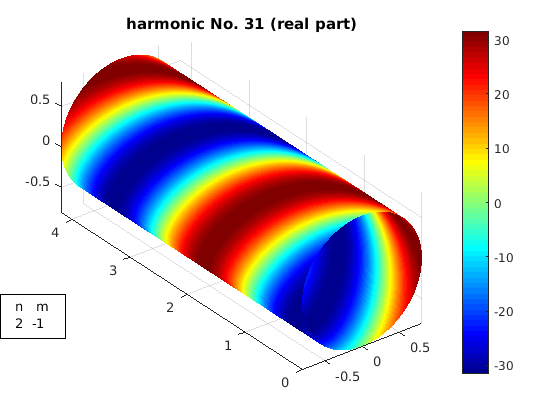 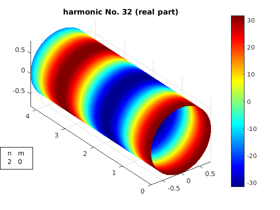 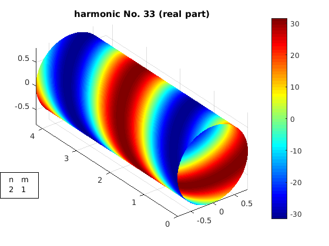 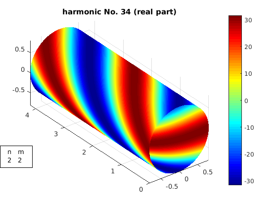 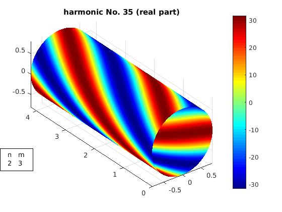 Filtering
The standard approach is to keep just a certain set of Fourier modes this corresponds to ommiting one basis function and its complex conjugate
filter.nm=[2 3]; % assemble filter matrix filter.mat=eye(size(MM)); %delete mode ... idx=find((nm(:,1)==filter.nm(1) & nm(:,2)==filter.nm(2))); filter.mat(idx,idx)=0; %and complex conjugate idx=find((nm(:,1)==-filter.nm(1) & nm(:,2)==-filter.nm(2))); filter.mat(idx,idx)=0; %Apply filter filter.MM=filter.mat'*MM*filter.mat; %Calculate eigenvalues of filtered matrix filter.D=eig(double(subs(subs(filter.MM,r,minorR),R0,majorR))); filter.D(filter.D==0)=[]; % Eigenvalues of original matrix d1=eig(double(subs(subs(MM,r,minorR),R0,majorR))); % Eigen d2=eig(double(subs(subs(filter.MM,r,minorR),R0,majorR))); d2(d2==0)=[];
Filtering changes global spectrum of operator
Whereas filtering directly the eigenvalues leaves the spectrum untouched and acts only locally. This also works in radial direction
figure plot(D,'*-'); hold on; plot(filter.D,'*-'); legend('original','mode filtered'); title('eigenvalues of L^2 projection'); grid on;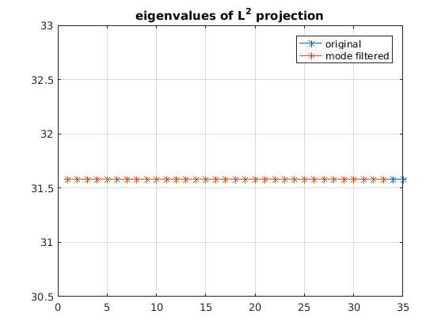
Harmonics of Laplace operator
Todo
% % % % % sort(diag(U)) % % % Mint=matlabFunction(M,'Vars',[theta,phi,m1,m2,n1,n2]); % % num_theta=5; num_phi=5; % [m,n]=ndgrid( -num_theta:1:num_theta, -num_phi:1:num_phi); % m=reshape(m,numel(m),1); % n=reshape(n,numel(n),1); % nm=[n,m]; % % % % M=zeros((num_theta*2+1)*(num_phi*2+1)); % for idx=1:length(nm) % for jdx=idx:length(nm) % M(idx,jdx)=sum(sum(Mint(THETA,PHI,... % nm(idx,2),nm(jdx,2),nm(idx,1),nm(jdx,1))))... % *(2*pi/length(int_grid))^2; % end % end % M(abs(M)<1e-13)=0; % M=M+M'-diag(diag(M)); % % % abs(nm)==0 % size(M) % rank(M) % % % % K=psi_grad(m1,n1)'*L*psi_grad(m2,n2); % K=subs(subs(K,'r',1),'R0',5); % K=simplify(K); % % disp(K) % % int(int(psi_grad(m1,n1)'*L*psi_grad(m2,n2),phi,0,2*pi),theta,0,2*pi) % % %K_mn=int(int(K_mn, theta,0,2*pi),phi,0,2*pi); % % Kint=matlabFunction(K,'Vars',[theta,phi,m1,n1,m2,n2]); % % real(K) % integral2(@(x,y)real(Kint(x,y,1,1,3,3)),0,2*pi,0,2*pi) % % % integral( @(x)exp(1j*(1)*x),0,2*pi) % % % % K_mn=simplify(int(K, phi,0,2*pi)); % % simplify(K_mn) % % simplify(K_mn(2,2,3,3)) % % int(K % % % % % % int(exp(1j*(n1-n2)*theta),0,2*pi) % % K_mn(nm) % % K=zeros(num_phi*num_theta); % % % % % nm=1; % n=1; % for idx=1:size(K,1) % % for jdx=idx:size(K,1) % % end % % end % % subs(L) % % % % % % % %% Flux surface % % We fix _r_ to describe a single flux surface. % % % % % % r=1; % R0=4; % % syms R0 r; % % [V,D]=eig([ 2*pi*R0*r, pi*r^2; pi*r^2, 2*pi*R0*r]); % % %